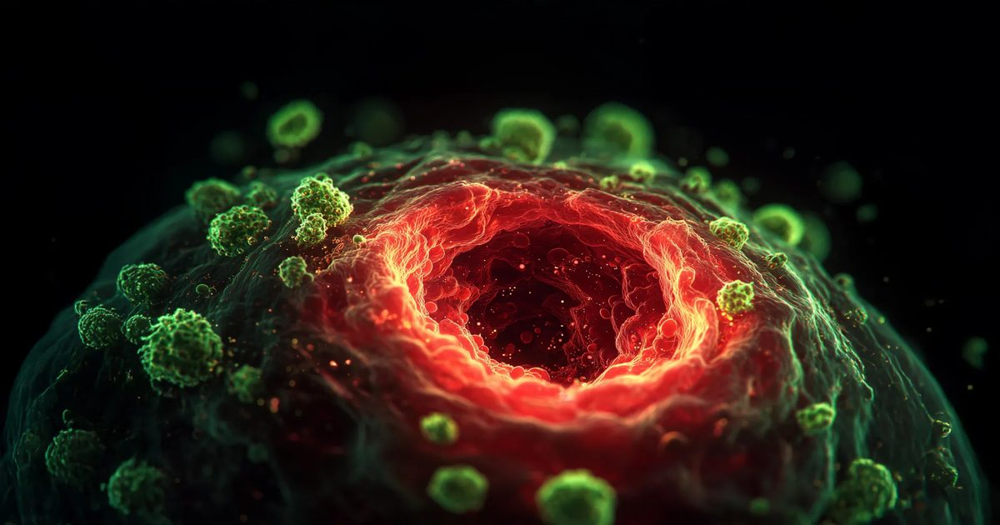

Препарат витамина D может помочь расколоть защитный щит рака поджелудочной железы
Аналог витамина D может помочь разрушить защитную защиту рака поджелудочной железы, потенциально делая опухоли более уязвимыми для химиотерапии и иммунной атаки.
Небольшое клиническое исследование выявило обнадеживающие ответы, особенно у пациентов, опухоли которых имели высокий уровень рецептора витамина D.